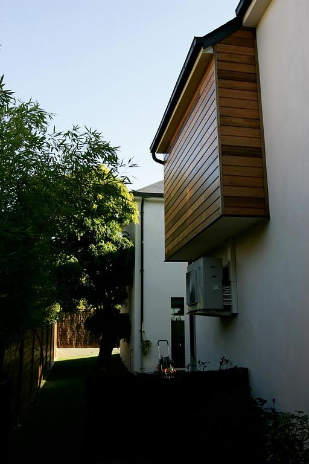

Extension ossature bois près de Versailles

Procept a réalisé une extension en ossature bois pour une famille proche de Versailles, avec vérification structurelle et diagnostic préalable du bâti existant.
Le chantier a intégré une terrasse et une continuité visuelle avec les espaces de vie, tout en respectant les contraintes urbanistiques locales.
L’ossature bois permet un chantier plus rapide, une bonne performance thermique et une extension légère adaptée aux maisons de l’ouest parisien.
Rénovation, agrandissement ou surélévation : nous intervenons à Versailles, Rueil-Malmaison, Marly-le-Roi et dans les Yvelines.